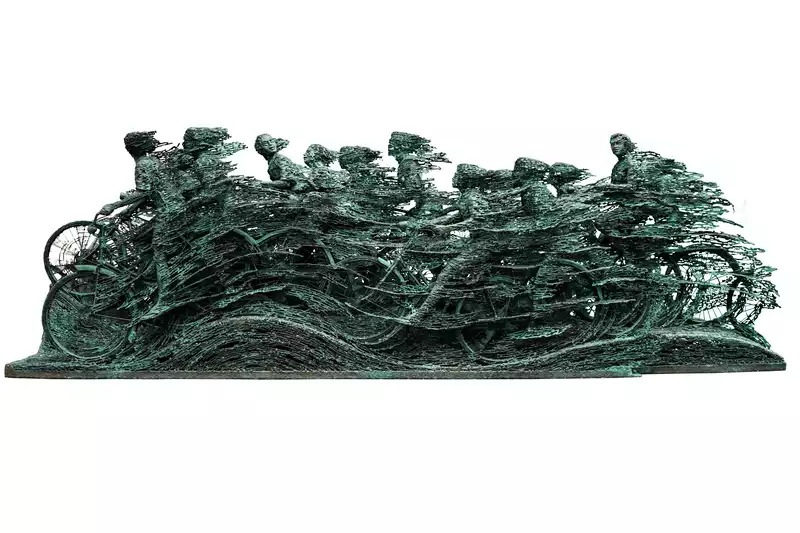

Assessment 1: HMsEx state profile
What “Exhilarating” means to me
I would define exhilarating as that heart-thumping, soul-igniting feeling that catches you unexpectedly and so deeply it takes you somewhere until you forget yourself for a moment. Drawing from my appreciation of Big Band and Swing-era jazz, I associate this feeling with the gradual build-up of a performance with each note and rhythm intensifying, accompanied by the light staccato of a crooner’s scat, culminating in a climactic moment that elevates the listener. I often seek this sensation during my daily walk to campus. Those fleeting moments when time seems to pause, the senses sharpen, and I feel unusually alive.
Visually?
As my practice in this studio will primarily involve 3D design and visual programming, I'd define the term 'exhilarating' as a visual phenomenom that radiates an uncontrollable surge of energy. I feel like it is an aesthetic quality that goes beyond passive observation, actively engaging the viewer through dynamic composition, unexpected forms, and intense sensory stimulation. Through observing these design/art examples, I found that they all have one thing in common: none of them 'play it safe' although most of them are leaning towards the 'decorative' aspect. Instead, they challenge expectations, evoke surprise, and elevate the experience to an affective level. These works demonstrate that exhilaration in design is not merely about visual impact, but about creating a visceral response.
1. The Vessel at Hudson Yards

For the first example, in architecture, it might be a structure that looks as if it is rising boldly into the sky or twists in a way that defies your expectations. Which brings us to my first design example, which is The Vessel at Hudson Yards, New York.
Architecturally, its towering honeycomb-like structure draws the eye upwards and invites physical movement through its spiralling staircases. The sense of verticality, repetition, and open air all create a thrilling spatial experience. Moreover, the underlying mechanics are rooted in visual rhythm, symmetry, and scale (makes me feel tiny or powerless; maybe megalophobia?).
This structure best represents exhilaration because the constant shift in perspective as you ascend or descend mirrors the emotional lift you feel, the same way a piece of music might build to a climax. According to architectural theorists like Juhani Pallasmaa, at least from what I gathered, when architecture activates the full range of human perception not just what we see but how we move, feel, and inhabit a space it creates a deeper emotional and psychological impact. With that in mind, The Vessel succeeded in giving me that when I first experienced it.
Some of the mechanics that I might apply or try to replicate in my design work would include the incorporation of verticality and layered transitions, such as using rising paths or structures that gradually reveal new views or stages (and it pulls you into it). Second and last, the use of repetition and rhythm in form, such as intertwining lines, staircases, or built-up narrative momentum.
2. The Tetris Effect
 video
video
My second example is The Tetris Effect, which stands out as an exhilarating experience not just because of the gameplay, but because of how it fully immerses your senses. Although the game has simple mechanics with the repetitive action of rotating and dropping blocks, this particular version gradually transforms the experience into something visually stunning and overwhelming as you progress. It builds serotonin as every movement syncs with fast-paced music, blended with a diverse movement of light that’s ongoing in the background.
I realized how valuable the synesthetic experience of your eyes, ears, and hands all working together is. It forces you to stay nonstop engaged with the experience, and I want to incorporate that. Hence, in my own design work, I want to explore how that kind of multisensory layering can force full engagement. The psychological aspect of The Tetris Effect keeps you locked in, with sound and visuals responding instantly to every action, creating an addictive yet emotionally charged rhythm that builds exhilaration naturally. I am interested in designing interactions or experiences that make users feel immersed and aware of their senses at every moment, so that engagement isn’t just required, it is felt. (Analogy: driving a manual car, you somewhat become one with it because you have to be in tune with the engine, gears, and road.)
3. Test Pattern [N°12]
Ryoji Ikeda’s ‘test pattern’ is one of the most exhilarating audiovisual installations. Though it might overlap with the theme of mesmerizing, I still find this to be appropriate. I would say that this particular example has somewhat similar traits to the Tetris Effect. The velocity of visuals flashing hundreds of frames per second purposely disorients and energizes the senses at once. It’s not just intense; it’s immersive. So, it will result in an overwhelming but thrilling sensory experience that locks you into the moment with full focus and heightened awareness.
Ikeda himself explains that test pattern was created to “explore how far technology can push our senses and how close it can get to the limits of what we can physically see and hear”. He describes the visuals as images that “float and convulse / agitate violently ” at extreme speeds.
The rapid alternation between black and white, silence and sudden noise, builds a kind of emotional momentum that feels like a non-verbal crescendo. It’s undoubtedly minimal, but it is unforgettable and hits you hard.

In my own design work, I want to apply similar mechanics by creating experiences that demand full sensory attention. What excites me about the test pattern is how it uses precision and repetition to pull you in. It doesn’t allow you to passively observe; it forces engagement. That pressure, that total absorption, is what creates the feeling of exhilaration. I’m interested in designing environments or media where light, sound, and rhythm act together to keep users alert, immersed, and in sync with the system. The sensory feedback loop becomes so tight and tense that it is impossible not to feel present in the moment.
4. Berstein's Rhapsody in Blue - Gershwin
 video
video
Stepping back to my passion in music, I would have to include conductor and composer, Leonard Bernstein’s rendition of the American Rhapsody in Blue by Gershwin with the New York Philharmonic, this one particular recording of its live performance in 1976 in the Royal Albert Hall, which was uplifting, breathtaking, stimulating, and deeply exhilarating.
What makes this performance so exhilarating is how it builds momentum through rhythm, melody, and dynamics, pulling the listener into a playful yet powerful flow. Every tempo shift and jazz-infused phrase feels like an emotional gear shift, and the closer it gets to its finale, the more it feels like the music is lifting you up and throwing you into the air.
This might have no relation to design, but what I’ve come to understand through watching Bernstein’s Rhapsody in Blue is that exhilaration in classical performance doesn’t just come from the music itself; it comes from the unique interpretation behind it. Some people tend to dismiss classical musicians as mere cover artists, but that completely overlooks the role of the conductor. Each conductor brings their own perspective, style, and emotional reading to the piece, which completely changes how it’s performed and felt. Bernstein, in particular, infuses the music with his own energy and charisma, guiding the orchestra not just through technical cues but through expressive intention. I’ve learned that this is why no two recordings of the same classical piece ever feel the same. The conductor’s interpretation during rehearsals and live performances deeply shapes the final outcome. That’s where the exhilaration lives: in the spontaneity, the nuance, and the human expression that emerges from a shared structure.
Back in context, what drives the exhilaration here is a mix of technical mastery and performative expression. Bernstein’s interpretation highlights the tension and release embedded in Gershwin’s score, but the element that I want to try and attempt to incorporate and recreate is the orchestral sound and feeling that will intensify my creative work, which would require a bit of composing and good pacing with the visuals.
5. Rush Hour V
Nyoman Nuarta’s copper and bronze sculpture Rush Hour V is a design example that looks and feels exhilarating. A sweeping artwork spanning over three metres, it depicts cyclists in intense motion. The sense of exhilaration is generated through layered repetition and implied movement: multiple overlapping figures sculpted in succession suggest continuous motion through time and space. The twisting, wind‑line textures reinforce urgency and kinetic thrust, like the relentless pulse of a cycle during peak rush hour (Mukabumi, 2020).
The work captures the exhilaration of being swept up in collective movement, the rush hour frenzy of human energy, compressed into a moment of speed and connection. Even though it’s still, you can almost feel the wind on your face, your muscles tensing. It’s visual adrenaline: tension, momentum, acceleration all carved into metal.
For my creative practice and design work, I want to imply motion through the layering of repeated and staggered colors and movement or other visual elements to suggest movement over time, even in static form.
In sculptural 3D forms, I could play with flowing geometry, curves, or repeating forms that spiral or cascade, like waves or ribbons, to give the eye a path to follow. The goal is to activate the space visually and emotionally, making it feel like the work is alive, breathing, vibrating, or accelerating.
6. Jeff Koons’ Balloon Dog
Next up is Jeff Koons’ Balloon Dog. Through sheer visual impact and sensory delight, supporting it with its 3 metres height, the sculpture mimics the lightness and fragility of a twisted party balloon, but is made entirely of high-polished stainless steel. I appreciate the irony and contradiction between the material and subject that creates an immediate sense of tension and wonder.

What I find exhilarating about the art is how the shiny surface exaggerates color and light, producing a near-hypnotic experience that feels joyful, playful, and a little surreal. It’s as if the childish joy of a balloon animal has been amplified to monumental proportions, triggering both nostalgia and awe (Legge, 2023)
What makes Balloon Dog exhilarating is the emotional contradiction: it feels both familiar and overwhelming. It exaggerates something fleeting and light into something heavy, reflective, and permanent. That tension is exciting to me, how Koons uses precision, finish, and scale to turn a simple object into an overwhelming experience In my own design work, I want to explore how visual exaggeration, unexpected materials, or scale can elevate everyday symbols into something that grabs attention and provokes feeling. Hence, material-wise, I could replicate since I delve into 3D modelling and design through experimenting with different materials and textures with a play of different lighting. Moreover, Balloon Dog reminds me that exhilaration can be built not just through motion or complexity, but through delight, boldness, and the unexpected.
7. Gamelan Semara Ratih of Ubud, Bali, Indonesia
 video
video
This next experience would have the sound powering over visuals. Gamelan music, especially when it’s heard live, is a deeply exhilarating experience. Truthfully, as a person who occasionally listens to traditional Indonesian Gamelan music, particularly Balinese and Javanese. Moreover, as a person who is ethnically from Indonesia, it would be easier for me to enjoy it than someone who had never heard of a gamelan being hit because there is a cultural influence; hence, different people would respond differently to the sound. Here is a performance example of the kind of sound I might want to replicate or use in my creative work:
At first, it can feel calm or hypnotic, but as the layered rhythms build and the tempo accelerates, it pulls you into a kind of ecstatic trance. In a live setting, the sound would feel like it’s surrounding you, although it’s in front. You feel the vibrations in your chest. Every hit of the gong or sudden stop in the rhythm feels like a sensory jolt. It’s communal, embodied, and atmospheric, where even silence is loaded with anticipation, and that I find super exhilarating.
You feel the vibrations in your chest. Every hit of the gong or sudden stop in the rhythm feels like a sensory jolt. It’s communal, embodied, and atmospheric, where even silence is loaded with anticipation. What I’ve learned from Gamelan in terms of design is the power of rhythmic layering and how structure doesn’t need to be linear to be impactful.
Gamelan music's exhilarating quality comes from its unique combination of intricate rhythms, bright and percussive sounds, and the way the instruments interact with each other. The fast-paced, interlocking patterns (kotekan) create a dynamic and complex texture, while the large gongs and metallophones produce a powerful, resonant sound.
In my own creative work, I want to explore how repetition and poly-rhythmic structure, whether in visual or sonic form, can build emotional intensity over time, and maybe I could sample and USE a bit from that recording onto my project.
8. Interior / Spatial design of BMW Welt building

The Interior / Spatial design of the BMW Welt building, designed by Coop Himmelb(l)au is another architectural or interior experience that fits the theme of exhilaration perfectly. At first glance, there is no flat, neutral moment; every part of the space directs your gaze upward, around, or forward, making you feel as though you’ve entered a machine in motion. The sheer scale, reflective materials, and sculptural lighting complement how we observe the cars strategically placed and spread around the space, undoubtedly contributing to a heightened sensory awareness, as if the building itself is breathing with energy.

Similarly to what I had stated above of what these examples have in common is that they never play it safe. The exhilaration here comes from how the interior bends architectural expectations. Instead of clean, static order, the design embraces asymmetry, layering, and motion. Light bounces unpredictably off surfaces; materials blend metal, glass, and steel with fluid transitions. According to Coop Himmelb(l)au, their philosophy centers on “architecture that burns” (or blazes), meaning architecture that moves, provokes, and energizes.
Although the orchestration of openness, layering, and material contrast is truly admirable, what caught my eye the most as a designer was its ability to evoke a constantly shifting spatial sensation. The voids, vertical drops, and layered pathways create a rhythm that physically energizes me, as if the space itself is alive, moving and accelerating around me. It feels like being inside a car engine. That, to me, is where its exhilarating radiance comes from.
I’m definitely going to dig deeper and do more research into the interior elements of this building. In my creative work, I want to explore how exhilaration can emerge effortlessly from a space or experience that unfolds gradually. It doesn’t have to be loud or chaotic to be powerful.
9. Light Vortex
video, video 2 read more
read more
‘Light Vortex’ is just one of the hundreds of artworks or experiences displayed in an immersive audiovisual environment/park, essentially a digital art museum with no boundaries in Abu Dhabi, by teamLab Phenomena. ‘Light Vortex’ is one of the two examples I selected from teamLab.
This audiovisual installation evokes a sense of exhilaration in me through its overwhelming presence of light, hyper music, scale, and visual rhythm. What makes LightVortex exhilarating is how it manipulates scale and perspective with its luminous energy in hundreds of layered beams that pulse, rotate, and refract in hypnotic synchrony. As you stand within the vortex, the lights seem to twist around you, drawing you into the center of a moving storm. The sheer intensity of the lines, paired with the atmospheric soundtrack, creates a full-body sensation that is equal parts meditative and electrifying.
In my own design work, I’m inspired by how this piece builds exhilaration through movement and layering without using any narrative or literal imagery, but at the same time manipulates the scale and perspective, as if you’re within/in the middle of that vortex
10. Morphing Continuum
video read moreAlso an exhilarating spatial experience by teamLab is the Morping Continuum. It surrounds the viewer in a living storm of reflective spheres/balloons?. These floating forms swarm through the space in unpredictable waves, gliding, clustering, and parting as if guided by an invisible force. This example in particular creates movement that feels organic and alive. The spheres pulse with changing light and color, while mirrored walls multiply their presence, making you feel more immersed and surrounded.
What makes Morphing Continuum exhilarating is its ability to translate quantity and motion into emotion. It’s both unpredictable and precise, which keeps your attention fully engaged, moment by moment. In my creative work, I am mostly inspired by how this installation creates exhilaration through choreographed complexity; it might fall into ‘overwhelming’ if not animated correctly, but the goal is to balance chaos and order to captivate the senses.
As both a 3D artist and visual programmer, I want to explore particle systems, motion behaviors, and especially reflective materials that can be wrapped around my moving FBXs.
Bibliography of Assignment 1 - 10 examples:
- Steel Institute of New York 2020, The Vessel at Hudson Yards, Steel Institute of New York, https://siny.org/project/the-vessel-at-hudson-yards/.
- Heatherwick Studio n.d., Vessel, Heatherwick Studio, https://heatherwick.com/project/vessel/
- Engadget 2018, ‘Tetris Effect is therapy for distracted, anxious minds’, Engadget, https://www.engadget.com/2018-11-21-tetris-effect-ps4-synesthesia-psvr.html
- Ikeda, R n.d., test pattern project page, ryojiikeda.com, https://www.ryojiikeda.com/project/testpattern/
- Pallasmaa, J 2012, The Eyes of the Skin: Architecture and the Senses, Wiley, Chichester., https://www.homeworkforyou.com/static_media/uploadedfiles/The%20Eyes%20of%20the%20Skin%20-%20Architecture%20and%20the%20Senses%20by%20Juhani%20Pallasmaa.pdf
- Elephant 2019, ‘Ryoji Ikeda’s Test Pattern Proves the Beauty in the Brutal’, Elephant, https://elephant.art/ryoji-ikeda-test-pattern/
- Forma Arts n.d., ‘Ryoji Ikeda: test pattern’, Forma, https://forma.org.uk/projects/test-pattern
- YouTube 1976/posted later, George Gershwin—Rhapsody in Blue (Bernstein/NY Phil, Royal Albert Hall), https://www.youtube.com/watch?v=cH2PH0auTUU&list=RDcH2PH0auTUU&start_radio=1
- Mukabumi 2020, ‘Rush Hour V by I Nyoman Nuarta’, Mukabumi, https://mukabumi.org/category/art/
- Sotheby’s Institute 2024, ‘Jeff Koons Balloon Dog: an Icon of Contemporary Art’, https://sothebysinstitute.com/articles/how-to-series-balloon-dog/
- Genelec Music Channel 2017, Sound Tracker - Gamelan (Indonesia), video, YouTube, https://www.youtube.com/watch?v=UEWCCSuHsuQ&list=RDUEWCCSuHsuQ&start_radio=1
- archiweb.cz n.d., ‘BMW Welt’, archiweb.cz, https://www.archiweb.cz/en/b/bmw-welt
- teamLab n.d., ‘Light Vortex (exhibition page)’, teamLab,
- teamLab 2025, ‘Morphing Continuum’, teamLab,